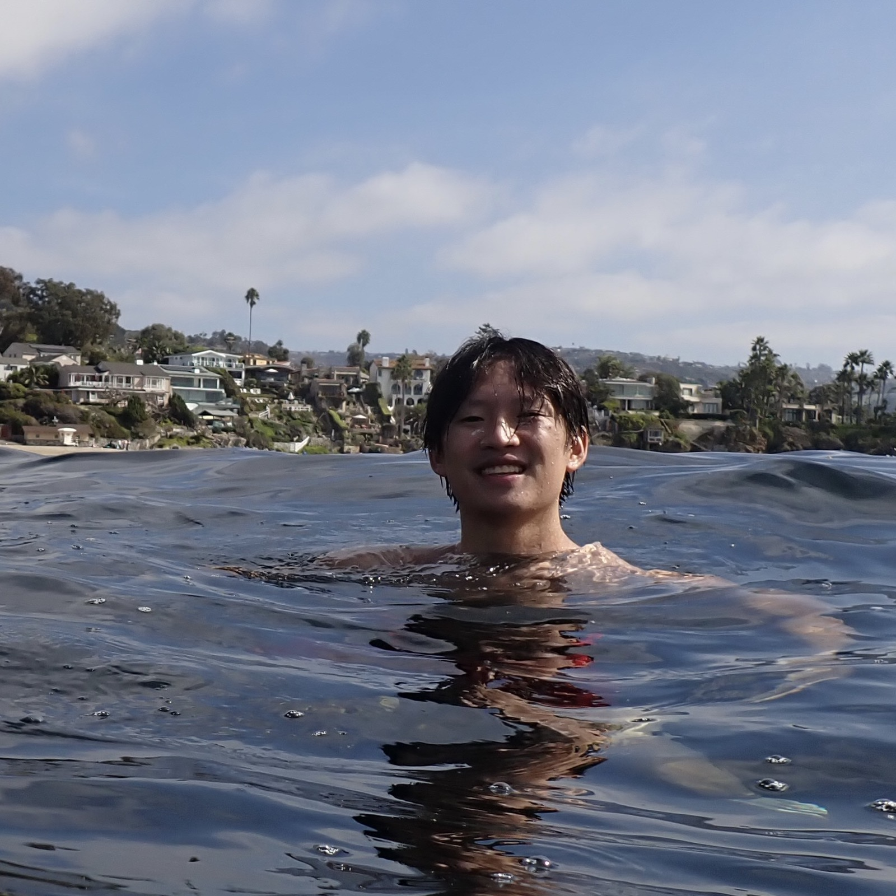
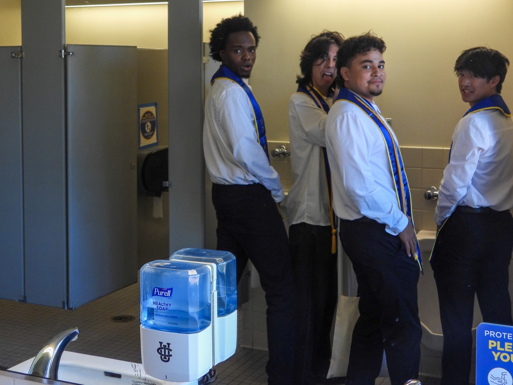
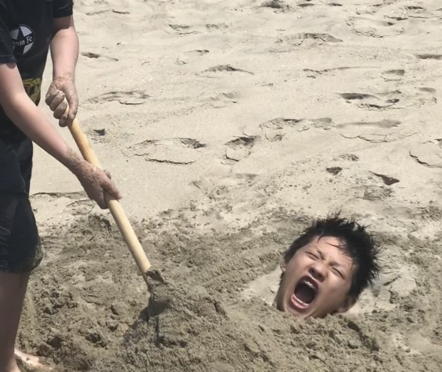

About me

I'm a first-year physics PhD student at Stanford University, working in the Kavli Institute for Particle Astrophysics and Cosmology. I am grateful to be funded by the National Science Foundation's Graduate Research Fellowship Program (NSF GRFP), the Stanford Graduate Fellowship (SGF), and the KIPAC Graduate Fellowship. You can find my CV here (updated June 2026).
I'm still deciding on what to focus on, but I'm hoping to focus on some combination of plasma physics and astrophysics.
Prior to Stanford, I had the best four years of my life at UC Irvine, where I majored in Physics and Math. There, I co-founded the National Society of Black Physicists chapter and also served as the president + outreach chair of the Society of Physics Students club.
I had way too much fun with my friends there! I am grateful to have worked in galactic astrophysics with Professor James Bullock and Dr. Courtney Sandomirsky, quantum algorithms with Professor Sandy Irani and Professor Steve White, and plasma physics with Dr. Marc Swisdak through the TREND REU.


And before UC Irvine, I was homeschooled for 12 years in Glendora, CA. I was mostly self-taught with some help from my mom, dad, and grandpa, and instead of studying I spent all my time digging holes, climbing trees, and chasing our chickens.
Some of my favorite things I got to experience include playing violin in the Claremont Young Musicians Orchestra, training with Glendora High School's swim team, and exploring SoCal and playing Caveman Warfare as a Boy Scout in Troop 483 (before COVID) and Troop 486 (after COVID)–I am a proud Eagle Scout!
Interests
For fun, I like to
- Explore California on my bike (longest day trip was 116 miles!)
- Look for fish in the ocean
- Birdwatch with my brothers (and play rare bird sounds from my phone to trick them)
- Make terrible songs in my bedroom (you’ll find me on Spotify soon with 3 monthly listeners)
- Listen to music–my favorite artists are nothing,nowhere., LANY, Ayleen Valentine, sace6, Said the Sky, Joshua Golden, Gracie Abrams, and EDEN (in no particular order). I have logged over 100k minutes in my Spotify Wrapped before!
- Blow up my kitchen making terrible concoctions
- Play Supercell games WAY too much—you can check out my progress with the tabs on this site.
My best friends in physics are Vincent Caudillo, James Buda, and Marco Cheng. Check them out too!